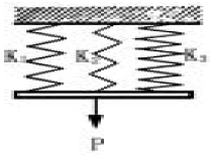
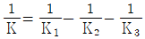
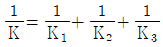

농업기계산업기사 (2005-05-29 기출문제)
1과목: 농업기계공작법
1. 연삭 버언(grinding burn)이란 용어 설명으로 가장 적합한 것은?
- 공작물 표면이 국부적으로 타는 현상
- 숫돌 바퀴가 타는 현상
- 절삭유가 타는 현상
- 칩이 탄 상태
(정답률: 83%)

2. 10 mm 두께의 연강재료를 가스용접하려 할 때 용접봉의 지름으로 다음 중 가장 적합한 것은?
- 14mm
- 10mm
- 6mm
- 3mm
(정답률: 79%)
3. 마이크로 미터의 스핀들 피치를 0.5㎜ 로 하고 딤블의 원주를 50등분하면 딤블 원주의 1눈금은 몇 ㎜ 인가?
- 0.1
- 0.⑤
- 0.01
- 0.0⑤
(정답률: 90%)
4. 다음 열처리 방법 중 담금질한 것에 A1 변태점 이하로 가열하여 인성(靭性)을 부여하는 것이 목적인 방법은?
- 퀜칭(quenching)
- 노멀라이징(normalizing)
- 어닐링(annealing)
- 템퍼링(tempering)
(정답률: 75%)
5. 동력 경운기 타이어의 공기압은 다음 중에서 몇 kgf/cm2 정도가 가장 적합한가?
- 0.8 ~ 1.5
- 2.0 ~ 3.0
- 4.0 ~ 5.0
- 6.0 ~ 8.0
(정답률: 81%)
6. 주철 중에 함유된 원소 중에서 쇳물에 유동성과 경도를 증가시키나 재질을 취약하게 하는 원소는?
- 탄소
- 규소
- 망간
- 인
(정답률: 78%)
7. 원통형 용기의 가장자리를 둥글게 말아 강도의 보강이나 장식을 하는 가공법은?
- 커링
- 바 포울더
- 그루우빙
- 포밍 머신
(정답률: 65%)
8. 다음 중 손작업으로 금긋기를 하려고 할 때 필요하지 않은 공구는?
- 콤파스
- 직각자
- 캘리퍼스
- 스크레이퍼
(정답률: 85%)
9. 다음 중 수작업용 공구가 아닌 것은?
- V-블록
- 선반
- 트로멜
- 정반
(정답률: 84%)
10. 강을 A3 변태점보다 20∼50 ℃ 높은 온도로 가열한 후 급랭시켜 경도를 증가시키는 열처리 방법은?
- 템퍼링(tempering)
- 어닐링(annealing)
- 담금질(quenching)
- 노말라이징(normalizing)
(정답률: 95%)
11. 주물제품에 중공(中空)이 있어 이것에 해당하는 모래주형이 있는 목형은?
- 골조 목형
- 고르게 목형
- 코어 목형
- 현형 목형
(정답률: 73%)
12. 선반에서 테이퍼 절삭방법이 아닌 것은?
- 복식 공구대를 경사시키는 방법
- 심압대(tail stock)를 편위시키는 방법
- 테이퍼 절삭장치를 사용하는 방법
- 주축대(head stock)를 편위시키는 방법
(정답률: 74%)
13. 호우닝 머신에서 내면 가공시 공작물에 대해 호운은 어떤 운동을 하는가?
- 직선왕복 운동 만
- 회전운동 만
- 회전 및 직선왕복 운동
- 상하운동 만
(정답률: 90%)
14. 회전하는 상자에 공작물과 숫돌입자, 공작액, 콤파운드 등을 함께 넣어 공작물이 입자에 충돌하여 다듬질 가공면을 얻는 방법은?
- 호닝(honing)
- 배럴(barrel) 다듬질
- 버니싱(burnishing) 다듬질
- 슈퍼피니싱(super finishing)
(정답률: 84%)
15. 구멍용 한계 게이지의 종류가 아닌 것은?
- 링 게이지(ring gauge)
- 봉 게이지(bar gauge)
- 테이퍼 게이지(taper gauge)
- 평 플러그 게이지(flat plug gauge)
(정답률: 69%)
16. 선재의 지름이나 판재의 두께를 측정할 때 가장 적합한 게이지는?
- 드릴 게이지
- 피치 게이지
- 틈새 게이지
- 와이어 게이지
(정답률: 77%)
17. 크랭크샤프트, 흡배기 밸브 등의 부품에 가장 적합한 열처리 방법은?
- 청화법(cyaniding)
- 질화법(nitriding)
- 고주파 경화법(induction hardening)
- 화염경화법(flame hardening)
(정답률: 85%)
18. 드릴링 머신으로는 작업이 불가능한 것은?
- 리밍(reaming)
- 태핑(tapping)
- 해로잉(harrowing)
- 카운터 싱킹
(정답률: 53%)
19. 연삭숫돌 구성의 주요 3요소에 속하지 않는 것은?
- 기공
- 결합제
- 입도
- 숫돌입자
(정답률: 58%)
20. 공구의 수명식(Taylor의 식)을 나타내는 VTn=C 식의 설명으로 틀린 것은?
- V는 절삭속도(m/min)이다.
- T는 공구의 수명으로 단위는 초(sec)이다.
- n은 상수이며, 주로 1/10∼1/5 이 사용된다.
- C는 상수이며 공구, 공작물, 절삭조건에 따라 변하는 값이다.
(정답률: 77%)
2과목: 농업기계요소
21. 접촉면의 안지름 100mm, 바깥지름 140mm인 단판 클러치가 1200rpm에서 2kW의 동력을 전달하려면 축방향으로 클러치판을 밀어주어야 하는 힘은 약 몇 N(뉴톤)인가? (단, 접촉면의 마찰계수은 μ= 0.2 이다.)
- 1025 N
- 1125 N
- 1225 N
- 1325 N
(정답률: 28%)
22. 동력 경운기의 축에 사용된 로울러 베어링의 번호가 7015 이었다. 이 베어링의 안지름은 몇 mm 인가?(오류 신고가 접수된 문제입니다. 반드시 정답과 해설을 확인하시기 바랍니다.)
- 15
- 30
- 75
- 150
(정답률: 72%)
23. 헐거운 끼워맞춤에서 구멍의 최대치수가 50.025㎜이고, 최소치수는 50.000㎜이며, 축의 최대치수가 49.975㎜, 최소치수는 49.950mm일 때 최소 틈새는 몇 ㎜인가?
- 0.025
- 0.⑤0
- 0.075
- 0.100
(정답률: 72%)
24. 다음 브레이크 중 역전방지와 토크 및 힘의 전달에 사용하는 브레이크로 가장 적합한 것은?
- 나사 브레이크
- 원판 브레이크
- 캠 브레이크
- 포올 브레이크
(정답률: 62%)
25. 다음 중 V 벨트 전동과 비교한 체인 전동의 단점인 것은?
- V 벨트보다 큰 동력을 전달할 수 없다.
- 고속 운전시 소음이 생긴다.
- 속도비가 일정하지 않다.
- 초기장력이 필요하다.
(정답률: 67%)
26. 묻힘 키로 전달하는 회전력이 4000kgf-mm이고, 키의 폭과 길이가 b=12mm, ℓ = 30mm 이며, 축의 지름이 80mm일 때 키에 발생되는 전단응력은 약 몇 kgf/mm2 인가?
- 0.12
- 0.14
- 0.24
- 0.28
(정답률: 22%)
27. 3개의 스프링을 그림과 같이 연결하였을 때 조합 스프링 상수 K를 구하는 식은?

- K = K1 + K2 + K3
- K = K1 × K2 × K3


(정답률: 65%)
28. 직선베벨 기어 중에서 잇수가 같고, 피치 원추각이 45°인 기어의 명칭은?
- 보통 베벨 기어
- 크라운 기어
- 하이포이드 기어
- 마이터 기어
(정답률: 58%)
29. 마찰차의 원동차 지름이 200mm, 회전수는300rpm이고, 종동차의 지름이 300mm 일 때 종동차의 회전수(rpm)는? (단, 마찰면은 미끄럼이 없는 것으로 가정한다.)
- 200
- 300
- 400
- 500
(정답률: 65%)
30. 강판의 두께가 20mm, 리벳구멍의 지름은 18mm, 피치 80mm인 1줄 겹치기이음에서 1피치마다 1000kgf의 하중이 작용할 때 강판의 효율은 약 몇 % 인가?
- 62
- 67.7
- 74
- 77.5
(정답률: 30%)
31. 다음 중 두 축이 평행할 때 만 사용하는 기어는?
- 베벨 기어
- 크라운 기어
- 스퍼 기어
- 마이터 기어
(정답률: 54%)
32. 지름이 5cm인 원형 단면봉에 2000kgf의 인장하중이 작용할 때 이 봉에 생기는 인장응력 kgf/cm2 은 얼마인가?
- 509.30
- 101.86
- 400.00
- 80.00
(정답률: 57%)
33. 두축의 축선이 30°이하로 교차되는 각도로 운전하더라도 자유로이 운동을 전달할 수 있는 커플링은?
- 고정 커플링
- 유니버설 커플링
- 머프 커플링
- 오울드 햄 커플링
(정답률: 88%)
34. 평벨트 전동장치에서 장력비가 eμ= 2 이고, 벨트의 속도가 5m/s, 긴장측 장력이 90kgf일 때, 전달동력은 약 몇 kW 인가?
- 2.2
- 3
- 4.3
- 5.1
(정답률: 36%)
35. 코일 스프링에서 스프링의 평균지름을 2배로 하고, 축방향의 하중을 1/2로 하면 늘어나는 양은 몇 배로 되는가?
- 1/2 배
- 1 배
- 2 배
- 4 배
(정답률: 70%)
36. 크리프(creep) 현상에 관한 설명으로 올바른 것은?
- 일정한 온도하에서 일정한 하중이 작용할 때 변형률이 시간에 따라 증가하는 현상이다.
- 크리프 현상은 재료의 온도가 융점에 가까울수록 적게 나타난다.
- 납(Pb)은 상온에서는 크리프 현상이 나타나지 않는다.
- 응력이 클수록 크리프량이 적다.
(정답률: 75%)
37. 일반적으로 트랙터와 동력 경운기의 PTO 축에 가장 많이 사용되는 체결용 기계요소는?
- 코터
- 원뿔 키
- 세레이션
- 스플라인
(정답률: 70%)
38. 3줄 나사에서 피치가 3mm 이면 리드는 몇 mm인가?
- 1
- 3
- 6
- 9
(정답률: 78%)
39. 트랙터와 트레일러가 핀링크 이음으로 되어있다. 10ton의 전단하중을 받는 핀 재료의 허용 전단응력이 6㎏f/㎜2 일 때, 핀의 최소 허용지름은 약 몇 ㎜ 인가?
- 33
- 35
- 40
- 45
(정답률: 43%)
40. 중실원축과 재질, 길이 및 바깥지름이 같으나, 안지름이 바깥지름의 1/2인 중공원축은 중실원축보다 몇 % 가벼운가?
- 20
- 25
- 30
- 35
(정답률: 62%)
3과목: 농업기계학
41. 평면식 건조기에서 상하층간(上下層間)에 과도한 함수율의 차이가 나타나는 주요 원인이 아닌 것은?
- 초기 함수율이 20% 이상일 때
- 40℃ 이상의 고온으로 건조하였을 때
- 곡물의 단위 중량당 송풍량이 많을 때
- 곡물의 퇴적고(堆積高)가 30cm 이상일 때
(정답률: 68%)
42. 파종기의 구조 중 종자상자에 있는 종자를 항상 일정한 양으로 배출시키는 장치는?
- 배종장치
- 구절장치
- 복토장치
- 이식장치
(정답률: 76%)
43. 경운 정지작업을 하는 목적이 아닌 것은?
- 잡초를 제거하고 과밀한 작물을 제거한다.
- 후속작업이 쉽도록 토양을 부드럽게 한다.
- 토양 내부의 미생물의 활동을 저지시킨다.
- 표토을 반전, 매몰시켜 유기물의 부식을 촉진시킨다.
(정답률: 77%)
44. 투입식 콤바인에 대한 일반적인 특성 설명 중 틀린 것은?
- 작업 폭이 넓다.
- 자탈형 콤바인에 비해 습지에 대한 적응성이 뛰어나다.
- 보리와 같이 밭작물의 키가 불균일해도 효율적으로 수확할 수 있다.
- 자탈형 콤바인과 마찬가지로 이슬에 젖은 경우에도 사용할 수 없다.
(정답률: 63%)
45. 브로드 캐스터(Broad Caster)를 사용하는 파종방식은 다음 중 어느 방식에 해당하는가?
- 산파
- 조파
- 점파
- 이식
(정답률: 62%)
46. 플라우의 견인점 위치를 정하여 그 위치에 따라 경심과 경폭을 조절하는 부분은?
- 보습(share)
- 쟁기날(coulter)
- 비임(beam)
- 크레비스(clevis)
(정답률: 50%)
47. 말린 목초를 수납 또는 수송하는데 편리하도록 일정한 용적으로 압착하여 묶는 기계는?
- 헤이 터더(hay tedder)
- 헤이 로우더(hay loader)
- 헤이 베일러(hay baler)
- 헤이 컨디셔너(hay conditioner)
(정답률: 77%)
48. 다음 동력 살분무기의 특징에 대한 설명 중 틀린 것은?
- 분무 입자가 작으므로 부착율이 좋다.
- 액제와 분제를 다같이 살포할 수 있다.
- 분무 입자가 가늘어 비산 등의 손실이 크다.
- 소요 인원이 적으며 균일한 살포가 가능하다.
(정답률: 54%)
49. 다음 중 용적형 펌프이며 회전펌프에 해당되는 것은?
- 피스톤 펌프(piston pump)
- 기어 펌프(gear pump)
- 볼류트 펌프(volute pump)
- 터빈 펌프(turbine pump)
(정답률: 69%)
50. 다음 중 제초 작업기가 아닌 것은?
- 컬티패커(cultipacker)
- 컬티베이터(cultivator)
- 로터리 호우(rotary hoe)
- 웨이더 멀쳐(weeder mulcher)
(정답률: 52%)
51. 다음 방제기 중 비산의 위험성이 크기 때문에 노지재배에 사용하기에는 가장 곤란한 기종은?
- 고온 연무기
- 동력 분무기
- 인력 분무기
- 동력살 분무기
(정답률: 80%)
52. 일반적인 스피드 스프레이어의 원동기와의 연결방식에 따른 종류가 아닌 것은?
- 견인형
- 가반형
- 탑재형
- 자주형
(정답률: 70%)
53. 콤바인에서 1차 탈곡이 이루어진 것을 재선별하여 탈곡이 덜 된 것은 탈곡통으로 보내고 나머지는 기체 밖으로 배출하는 기능을 하는 곳은?
- 짚 처리부
- 배진실
- 검불 처리통
- 탈곡망
(정답률: 64%)
54. 상온 통풍건조방식에 대한 설명으로 가장 적합한 것은?
- 포장에서 태양과 자연 바람을 이용해 건조하는 방식
- 건조기에서 외부 공기를 가열없이 강제 송풍만으로 건조하는 방식
- 건조기에서 높은 온도의 공기를 송풍하여 건조하는 방식
- 곡물을 연속적으로 건조기에 투입 배출하며 건조하는 방식
(정답률: 65%)
55. 목초나 채소종자와 같이 크기가 작고 불규칙 형상의 종자를 파종하는 기계로 가장 적합한 것은?
- 휴립광산파기
- 세조파기
- 동력살분파기
- 공기식점파기
(정답률: 75%)
56. 로타리 경운날 종류 중 날 끝부분이 편평부와 80 ~ 90도의 각을 이루고 있으며, 잡초가 많은 흙을 경운하는데 효과적이며, 대형트랙터의 경운날로 쓰이는 형태의 날은?
- 보통형날
- 작두형날
- 삽형날
- L자형날
(정답률: 81%)
57. 다음 중 마찰작용과 찰리작용을 주로 이용하는 마찰식 정미기의 종류가 아닌 것은?
- 수평 연삭식
- 분풍 마찰식
- 일회 통과식
- 흡인 마찰식
(정답률: 60%)
58. 트랙터 원판 플로우(disk plow)의 특징이라고 할 수 없는 것은?
- 마르고 단단한 땅에서도 경기작업이 가능하다.
- 개간지와 같이 나무뿌리가 남아있는 경지의 경기작업에 적합하다.
- 점착성이 강한 토양에서는 경기작업이 불가능하다.
- 심경(深耕;deep plowing)이 가능하다.
(정답률: 61%)
59. 국내에 설치된 미곡 종합 처리장에서 각 공정간 곡물을 이송하기 위해 사용되는 일반적인 이송장치와 가장 관계가 적은 것은?
- 버킷 엘리베이터
- 벨트 컨베어
- 스크류 컨베어
- 공기 컨베어
(정답률: 69%)
60. 다음 중 펌프로써 가압하여 땅속에 압입하는 시비기인 심층 시비기에 속하는 것은?
- 라임소워
- 브로드캐스터
- 슬러리 인젝터
- 퇴비 살포기
(정답률: 52%)
4과목: 농업동력학
61. 고정자가 4극인 3상 유도전동기에 60Hz의 교류를 공급할 때 동기속도는 몇 rpm 인가?
- 900
- 1200
- 1800
- 2400
(정답률: 70%)
62. 트랙터가 선회할 때 외측차륜은 내측차륜보다 회전이 빨라야 한다. 선회시 좌·우측의 바퀴 회전을 다르게 할 목적으로 설치된 장치는?
- 감속장치
- 차동장치
- 변속장치
- 차동잠금장치
(정답률: 75%)
63. 소형 디젤기관의 연료실 중 직접분사식의 특징 설명으로 틀린 것은?
- 부실(副室)이 없다.
- 연료 소비률이 적다.
- 평균 유효 압력이 낮다.
- 드로틀 손실이나 와류 손실이 없다.
(정답률: 59%)
64. 트랙터의 캠버각에 대한 설명으로 가장 적합한 것은?
- 킹핀의 중심선과 수직선에 대하여 안쪽으로 5 ~ 11° 정도 경사지게 부착되어 있는 각이다.
- 앞바퀴에서 아래쪽이 좁고 윗쪽이 넓게 되도록 지면(地面)에 내린 수직선에 대하여 1.5 ~ 2°정도의 경사각이다.
- 킹핀을 측면에서 보면 킹핀의 중심선과 수직선에 대하여 뒤쪽으로 2 ~ 3°정도 경사지게 부착되어 있는 각이다.
- 보통 차륜 중심선의 전면(前面)과 후면(後面)과의 치수 차이로 표시하며 3 ~ 10 mm 이다.
(정답률: 58%)
65. 3점 링크 히치의 특징 설명으로 틀린 것은?
- 유압제어가 필요 없다.
- 작업 회전반경이 작다.
- 큰 견인력을 얻을 수 있다.
- 작업기 운반이 용이하다.
(정답률: 78%)
66. 긴 내리막 길에서 엔진 브레이크를 사용하면 제동장치의 발열, 마모가 적어져 유리하다. 어떻게 하는 것인가?
- 변속기를 저속단수에 변속시키고 주행한다.
- 변속기를 고속단수에 변속시키고 주행한다.
- 엔진을 끄고 브레이크 페달을 사용한다.
- 기어를 중립에 놓고 브레이크를 사용한다.
(정답률: 80%)
67. 기화기의 혼합비가 너무 농후한 경우에 나타나는 현상이 아닌 것은?
- 기관이 과열된다.
- 출력이 증가된다.
- 연료소비가 증가된다.
- 기관의 회전이 불규칙해진다.
(정답률: 62%)
68. 320kgf를 0.8m/sec로 견인할 때 소요되는 동력은 약 몇 kW 인가?
- 2.5
- 3.4
- 25.1
- 34
(정답률: 28%)
69. 120Ah 인 축전지로 10A 의 전류를 몇 시간 계속 방전할 수 있는가?
- 8시간
- 10시간
- 12시간
- 14시간
(정답률: 75%)
70. 트랙터의 구조에서 조향장치에 해당하는 것은?
- 변속기
- 메인 클러치
- 차동 장치
- 스티어링 아암
(정답률: 70%)
71. 트랙터의 동력 취출장치(PTO)의 형식 중에서 파종기와 이식기의 회전 동력원으로 가장 적합한 것은?
- 독립형
- 상시 회전형
- 변속기 구동형
- 속도 비례형
(정답률: 70%)
72. 트랙터의 동력측정용 성능시험으로 가장 적합한 것은?
- 견인성능시험
- 작업기 승강시험
- PTO 성능시험
- 변속 단수별 주행시험
(정답률: 78%)
73. 부하 변동에 관계없이 기관의 회전속도를 일정한 범위로 유지시키는 장치는?
- 크랭크 축
- 플라이 휠
- 타이밍 기어
- 조속기
(정답률: 78%)
74. 디젤연료의 세탄가에 관한 설명으로 틀린 것은?
- 디젤 노크에 견디는 성질을 나타내는 척도이다.
- 시판 중인 디젤 연료의 세탄가는 60을 초과해서는 안된다.
- 세탄가가 너무 낮으면 기관의 시동이 곤란하거나 불가능하게 된다.
- 세탄가가 너무 높으면 배기 중에 미연소 연료입자로 구성된 흰 연기가 나타난다.
(정답률: 50%)
75. 가솔린 기관과 비교한 디젤 기관의 특징 설명으로 올바른 것은?
- 흡입 행정시 연료만을 흡입한다.
- 전기점화 장치가 복잡하여 고장이 많다.
- 연료 소비율은 적으며 열효율은 높다.
- 폭발 압력이 낮기 때문에 소음이 나지 않는다.
(정답률: 75%)
76. 어떤 물체가 힘 200kgf에 의하여 30m 이동하는데 20초 걸렸다고 하면 이 때의 동력은 몇 kgf-m/sec 인가?
- 150
- 200
- 250
- 300
(정답률: 39%)
77. 4기통 2사이클 가솔린 기관의 행정이 100mm, 실린더 내경도 100mm이고 연소실 체적이 120cc일 때 총배기량은?
- 785cc
- 3142cc
- 1571cc
- 6283cc
(정답률: 56%)
78. 엔진의 회전수를 측정하는 기기인 것은?
- 타코메터
- 디크니스 게이지
- 다이얼 게이지
- 버니어 갤리퍼스
(정답률: 84%)
79. 실린더 헤드에 위치하여 냉각수의 온도에 따라 라디에터로 통하는 냉각수의 통로를 개폐하여 냉각수의 온도를 일정하게 유지해 주는 장치는?
- 물 자켓트
- 냉각 팬
- 정온기(thermostart)
- 오일 휠터
(정답률: 74%)
80. 트랙터의 견인력을 증대시키기 위한 일반적인 방법이 아닌 것은?
- 마른 점토에서는 트랙터의 무게를 크게 한다.
- 타이어 직경이 큰 바퀴를 사용한다.
- 바퀴의 공기 압력을 낮게 한다.
- 폭이 좁은 타이어를 사용한다.
(정답률: 80%)